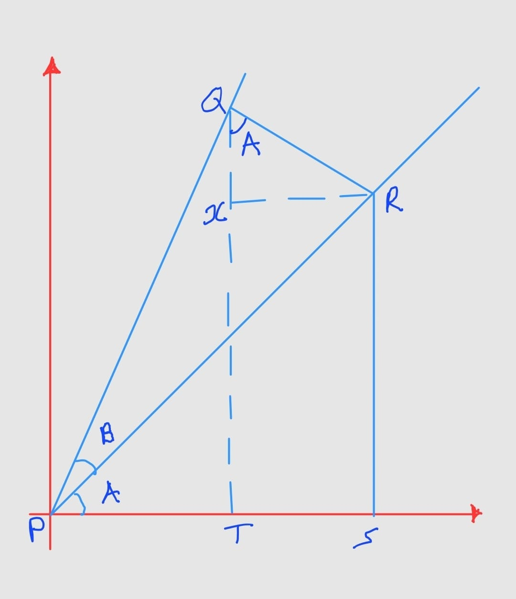

QUESTION 01
1. Derive the following
a. Derivation of Compound Angle Formula
Definition: A compound angle is an angle formed by combining two simpler angles that are measured on different planes.
Consider the figure below:
Figure 1.1: Geometric construction for compound angle derivation
In the diagram, the triangles PQR, PRS, and PQT are all right-angled.
∠PRX = A, ∠XRQ = 90° - A, ∠XQR = A
Compound Angle for Sine
Consider,
But, QT = QX + TX
Since TX = RS
Using Trigonometry,
Compound Angle for Cosine
Using the similar method as above,
But, PT = PS - ST
Using trigonometry,
Compound Angle for Tangent
Since,
Divide by \(\cos A \cos B\) in both numerator and denominator:
b. Derivation of Half-Angle Formulas
Half-Angle Formula for Sine
Starting from the double-angle formula:
Rearranging:
Let \(\theta = \frac{A}{2}\), then \(2\theta = A\):
Half-Angle Formula for Cosine
From the double-angle formula:
Rearranging:
Let \(\theta = \frac{A}{2}\):
Half-Angle Formula for Tangent
Using the quotient identity:
Alternative form:
c. Derivation of Sine and Cosine Rules
Sine Rule:
In triangle ABC, drop altitude h from C to AB.
Similarly, by dropping altitude from B to AC:
Cosine Rule:
Using the same triangle, by the Pythagorean theorem:
But \(h^2 = b^2 - x^2\) and \(x = b \cos A\):
Similarly,
Summary of Results:
| Formula Type | Equation |
|---|---|
| Sine Rule | \(\frac{a}{\sin A} = \frac{b}{\sin B} = \frac{c}{\sin C}\) |
| Cosine Rule | \(a^2 = b^2 + c^2 - 2bc \cos A\) |
| Compound Angle (Sine) | \(\sin(A \pm B) = \sin A \cos B \pm \cos A \sin B\) |
| Compound Angle (Cosine) | \(\cos(A \pm B) = \cos A \cos B \mp \sin A \sin B\) |
| Compound Angle (Tangent) | \(\tan(A \pm B) = \frac{\tan A \pm \tan B}{1 \mp \tan A \tan B}\) |
QUESTION 02
2. Draw the graphs of the following functions;
Graphs of Trigonometric Functions
a.) \(y = \sin 2x\)
| Property | Value |
|---|---|
| Amplitude | 1 |
| Period | \(\pi\) |
| Phase Shift | 0 |
| Range | [-1, 1] |
b.) \(y = \cos^2 x\)

| Property | Value |
|---|---|
| Using identity | \(\cos^2 x = \frac{1 + \cos 2x}{2}\) |
| Amplitude | \(\frac{1}{2}\) |
| Period | \(\pi\) |
| Range | [0, 1] |
c.) \(y = \cot x\)
| Property | Value |
|---|---|
| Definition | \(\cot x = \frac{\cos x}{\sin x}\) |
| Period | \(\pi\) |
| Asymptotes | \(x = n\pi, n \in \mathbb{Z}\) |
| Zeros | \(x = \frac{(2n+1)\pi}{2}\) |
d.) \(y = \sin^{-1} x\)
| Property | Value |
|---|---|
| Domain | [-1, 1] |
| Range | \([-\frac{\pi}{2}, \frac{\pi}{2}]\) |
| Symmetry | Odd function |
| Key points | \((-1, -\frac{\pi}{2}), (0,0), (1, \frac{\pi}{2})\) |
QUESTION 03
3. Find the equation to the tangents and normal to the parabola \(y^2 = 16x\) at the points (16,16), (1, −4). The tangent intersect at the point T and the normal intersect at R. Prove that the line TR is parallel to the axis of the parabola.
Parabola: \(y^2 = 16x\)
Given: \(y^2 = 16x\)
Comparing with standard form \(y^2 = 4ax\):
Verification of points:
Point P(16,16): \(16^2 = 256\), \(16 \times 16 = 256\) ✓
Point Q(1,-4): \((-4)^2 = 16\), \(16 \times 1 = 16\) ✓
Equation of tangent at (x₁, y₁):
Tangent at P(16,16):
Slope m₁ = \(\frac{1}{2}\)
Tangent at Q(1,-4):
Slope m₂ = \(-2\)
Intersection Point T of Tangents:
Equating T₁ and T₂:
Therefore, T = (-4, 6)
Equations of Normals:
For a parabola, slope of normal = \(-\frac{1}{\text{slope of tangent}}\)
Normal at P(16,16):
Normal at Q(1,-4):
Intersection Point R of Normals:
Equating N₁ and N₂:
Multiply both sides by 2:
Therefore, R = (21, 6)
Line TR:
Points: T(-4, 6) and R(21, 6)
Since both points have the same y-coordinate, line TR is horizontal: \(y = 6\)
Axis of the parabola:
The parabola \(y^2 = 16x\) has its axis along the x-axis: \(y = 0\)
Since TR is horizontal and the axis is horizontal, TR is parallel to the axis of the parabola.
Proof Summary:
T(-4, 6) and R(21, 6) lie on line y = 6
Parabola axis: y = 0
Both are horizontal lines
∴ Parallel
QUESTION 04
4. Find the coordinates of the points in which the line \(x + 2y = c\) meets the parabola \(y^2 = 10x\). Find the value of \(c\) when this line is a tangent to the parabola.
Line and Parabola Intersection
Given: Line: \(x + 2y = c\) and Parabola: \(y^2 = 10x\)
Finding intersection points:
From the line equation: \(x = c - 2y\)
Substitute into parabola:
This is a quadratic in y. The intersection points exist when the discriminant ≥ 0.
For tangency (line touches parabola at one point):
Discriminant Δ = 0
When c = -10:
Point of contact:
Coordinates of intersection points (for general c):
Using quadratic formula:
Therefore, intersection points are:
Ans:
When \(c = -10\), the line is tangent to the parabola at point \((10, -10)\)
QUESTION 05
5. Given the ellipse \(\frac{x^2}{25} + \frac{y^2}{16} = \frac{1}{2}\), find;
a. The eccentricity
b. Equation of directrix
c. The foci
Ellipse: \(\frac{x^2}{25} + \frac{y^2}{16} = \frac{1}{2}\)
Given equation:
Multiply both sides by 2:
This is of the form \(\frac{x^2}{a^2} + \frac{y^2}{b^2} = 1\) where:
Since \(a > b\), the major axis is along the x-axis.
a. Eccentricity
b. Equation of Directrix
For an ellipse, the directrices are given by \(x = \pm \frac{a}{e}\):
c. The Foci
The foci are at \((\pm c, 0)\):
Summary Table:
| Parameter | Value |
|---|---|
| Semi-major axis (a) | \(5\sqrt{2}\) |
| Semi-minor axis (b) | \(4\sqrt{2}\) |
| Linear eccentricity (c) | \(3\sqrt{2}\) |
| Eccentricity (e) | \(\frac{3}{5}\) |
| Foci | \((\pm 3\sqrt{2}, 0)\) |
| Directrices | \(x = \pm \frac{25\sqrt{2}}{3}\) |
QUESTION 06
6. A curve has equation \(9x^{2} + 25y^{2} = 225\). Show that, it is an ellipse and hence find;
a. The eccentricity
b. Coordinate of foci
c. The equation of directrix
d. The length of major axis and minor axis
Ellipse: \(9x^2 + 25y^2 = 225\)
Given: \(9x^2 + 25y^2 = 225\)
Divide both sides by 225:
This is of the form \(\frac{x^2}{a^2} + \frac{y^2}{b^2} = 1\), therefore it is an ellipse.
a. The Eccentricity
b. Coordinates of Foci
c. Equation of Directrix
d. Length of Major and Minor Axes
Summary Table:
| Parameter | Value |
|---|---|
| Semi-major axis (a) | \(5\) |
| Semi-minor axis (b) | \(3\) |
| Linear eccentricity (c) | \(4\) |
| Eccentricity (e) | \(\frac{4}{5}\) |
| Foci | \((\pm 4, 0)\) |
| Directrices | \(x = \pm \frac{25}{4}\) |
| Major axis length | \(10\) |
| Minor axis length | \(6\) |
QUESTION 07
7. Find the foci and length of the ellipse given by the equation; \(\frac{(x - 1)^2}{9} + \frac{(y - 4)^2}{16} = 1\).
Ellipse: \(\frac{(x-1)^2}{9} + \frac{(y-4)^2}{16} = 1\)
This is an ellipse in standard form \(\frac{(x-h)^2}{b^2} + \frac{(y-k)^2}{a^2} = 1\) with vertical major axis since \(16 > 9\).
Centre: (h,k) = (1,4)
Foci:
For a vertical major axis, foci are at \((h, k \pm c)\):
Length of Axes:
QUESTION 08
8. Find foci and directrix of the following; \(25x^{2} + 4y^{2} - 50x + 8y = 71\).
Ellipse: \(25x^2 + 4y^2 - 50x + 8y = 71\)
Group x and y terms:
Complete the squares:
Divide by 100:
Centre: (1, -1)
Since \(25 > 4\), the major axis is vertical.
Eccentricity:
Foci:
For vertical major axis, foci are at \((h, k \pm c)\):
Directrices:
For vertical major axis, directrices are \(y = k \pm \frac{a}{e}\):
Summary Table:
| Parameter | Value |
|---|---|
| Centre | \((1, -1)\) |
| a (semi-major) | \(5\) |
| b (semi-minor) | \(2\) |
| c | \(\sqrt{21}\) |
| Eccentricity (e) | \(\frac{\sqrt{21}}{5}\) |
| Foci | \((1, -1 \pm \sqrt{21})\) |
| Directrices | \(y = -1 \pm \frac{25}{\sqrt{21}}\) |
QUESTION 09
9. Find the distance between the foci, eccentricity and the length of latus-rectum of \(3x^{2} + 4y^{2} = 12\).
Ellipse: \(3x^2 + 4y^2 = 12\)
Divide by 12:
Distance between the foci:
Eccentricity:
Length of latus-rectum:
QUESTION 10
10. Find the equation of the tangent and normal to the ellipse \(5x^{2} + 3y^{2} = 137\) at the point in the first quadrant whose x-coordinate is 2.
Ellipse: \(5x^2 + 3y^2 = 137\)
Point in first quadrant with x-coordinate = 2
Substitute x = 2 into the ellipse equation:
Point P: \((2, \sqrt{39})\)
Equation of tangent at P:
For ellipse \(5x^2 + 3y^2 = 137\), the tangent at \((x_1, y_1)\) is:
Equation of normal at P:
Slope of tangent:
Slope of normal:
Equation of normal using point-slope form:
Summary:
| Item | Equation |
|---|---|
| Point of contact | \((2, \sqrt{39})\) |
| Tangent | \(10x + 3\sqrt{39}y = 137\) |
| Normal | \(y - \sqrt{39} = \frac{3\sqrt{39}}{10}(x - 2)\) |
QUESTION 11
11. Find the coordinates of foci, the eccentricity and the length of the latus-rectum of the hyperbola \(4x^{2} - 9y^{2} = 36\).
Hyperbola: \(4x^2 - 9y^2 = 36\)
Divide by 36:
This is a hyperbola with centre at \((0,0)\) and transverse axis along the x-axis.
Coordinates of foci:
Eccentricity:
Length of latus-rectum:
Summary Table:
| Parameter | Value |
|---|---|
| a | \(3\) |
| b | \(2\) |
| c | \(\sqrt{13}\) |
| Eccentricity (e) | \(\frac{\sqrt{13}}{3}\) |
| Foci | \((\pm \sqrt{13}, 0)\) |
| Latus rectum | \(\frac{8}{3}\) |
QUESTION 12
12. Write down the equation to the tangents and the normal to the hyperbola \(9x^{2} - 4y^{2} = 36\) at the point \((4, 3\sqrt{3})\).
Hyperbola: \(9x^2 - 4y^2 = 36\)
Divide by 36:
Check if point \((4, 3\sqrt{3})\) lies on the hyperbola:
Equation of tangent at \((x_1, y_1)\):
For hyperbola \(\frac{x^2}{a^2} - \frac{y^2}{b^2} = 1\), the tangent at \((x_1, y_1)\) is:
Here, \(a^2 = 4\), \(b^2 = 9\), and \((x_1, y_1) = (4, 3\sqrt{3})\):
Equation of normal at \((4, 3\sqrt{3})\):
Slope of tangent:
Slope of normal:
Equation of normal using point-slope form:
Summary:
| Item | Equation |
|---|---|
| Point of contact | \((4, 3\sqrt{3})\) |
| Tangent | \(3x - \sqrt{3}y = 3\) |
| Normal | \(y - 3\sqrt{3} = -\frac{\sqrt{3}}{3}(x - 4)\) |
FORMULA SUMMARY
Important Formulas Used
| Conic Section | Standard Equation | Key Parameters |
|---|---|---|
| Parabola | \(y^2 = 4ax\) | Focus: \((a,0)\), Directrix: \(x = -a\) |
| Ellipse | \(\frac{x^2}{a^2} + \frac{y^2}{b^2} = 1\) | \(c^2 = a^2 - b^2\), \(e = \frac{c}{a}\), Foci: \((\pm c, 0)\) |
| Ellipse (vertical) | \(\frac{x^2}{b^2} + \frac{y^2}{a^2} = 1\) | \(c^2 = a^2 - b^2\), Foci: \((0, \pm c)\) |
| Hyperbola | \(\frac{x^2}{a^2} - \frac{y^2}{b^2} = 1\) | \(c^2 = a^2 + b^2\), \(e = \frac{c}{a}\), Foci: \((\pm c, 0)\) |
Tangent Equations:
- Parabola \(y^2 = 4ax\) at \((x_1, y_1)\): \(yy_1 = 2a(x + x_1)\)
- Ellipse \(\frac{x^2}{a^2} + \frac{y^2}{b^2} = 1\) at \((x_1, y_1)\): \(\frac{xx_1}{a^2} + \frac{yy_1}{b^2} = 1\)
- Hyperbola \(\frac{x^2}{a^2} - \frac{y^2}{b^2} = 1\) at \((x_1, y_1)\): \(\frac{xx_1}{a^2} - \frac{yy_1}{b^2} = 1\)